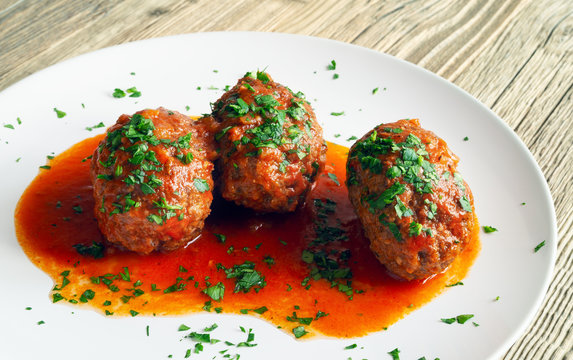

Soutzoukakia

Soutzoukakia is a Greek traditional food that has its roots in Smyrna.
The origins of soutzoukakia trace back to the Greek population of the early 20th Century Empire. This is a dish that was created by a minority population and survived atrocities, thanks to the hundreds of thousands of survivors who carried the recipe with them from Turkey to Greece.
Ingredients
- 1 kg Minced beef
- 100 gr Oats
- Olive oil
- Parsley
- Cumin
- Basil
- Tomato juice
Steps
- Put the Minced beef into a big bowl
- Put the Oats into a blender, blend them and put them into the bowl
- Add the Parsley and the Basil and the star of the recipe the cumin
- Now you mix all the ingredients together with your hands
- We take a baking dish and we cover it with a very small layer of olive oil
- Now we make oblong meatballs and we put them in the backing dish
- We put the tomato juice on top of the meatballs
- Finally we put the baking dish in the oven for 25 minutes at 180 degrees Celsius